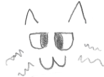

Description
Fluff is a white cat with brown spots, he is 36 years of age and has burnmarks on back and left paw, he is also the father to Green Apple and Coco.
Where Can I Buy From?
Due to Fluff's burn marks you cannot buy him from Dull Gwent.